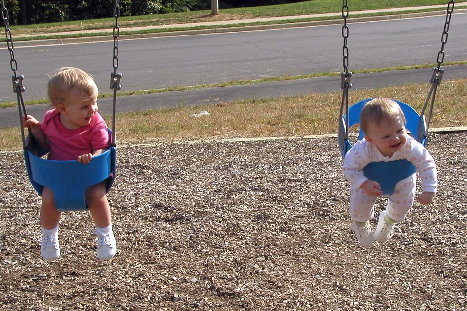
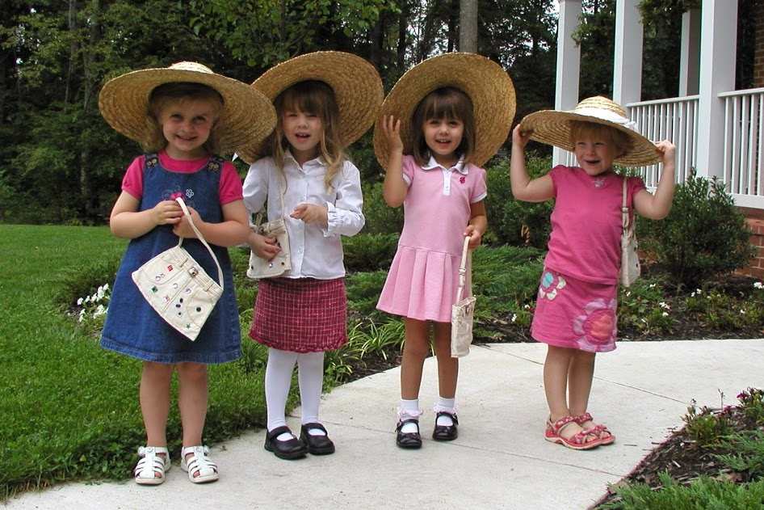

Ok, so I know this "card" is late, but I hope you still had an amazing birthday! It's taken me a lot longer, because I knew I had to make this website as special as possible for you! I hope you enjoy it!
Dear Jenna,
Hmm, where do I start? You have been one of my closest friends my entire life. I value your friendship and your presence in my life so much. You are such a wonderful person. You love everyone, and you don't try to be popular or well liked, you just are naturally. You are so kind and funny. You love the Lord, and I've always wanted to be more like you. I hope you like these pictures!
First off, yes, IT"S YOUR (kinda late) BIRTHDAY!!! Such a great face there. Hard to believe, right younger me? YOU'RE FOURTEEN!
That's right, lets CELEBRATE!!!
Wow, I think I know just what this super cute little version of you is thinking. COME ON ELLEN! Can we please get to the point? Alright, alright. But just so you know, this is suposed to be like this!
We've been friends for a REALLY long time. (These pictures prove it). Look at that, even when we were that little, you still made me laugh. We were instantly best friends!
These swing pictures are always what I think of when I think of baby us. I had to include them of course!
WOW, we are really cute! And we still love to go to the pool together! Of course, now we do fun things like take jogs in the pool and do flips.
Ok, so looking at this picture, a memory bubles up in my head. One day we were drawing, and you told me you couldn't draw a thing, that I was the artist and you were the writer. I told you anyone can draw and taught you step by step how to draw a butterfly. I bet you don't remember this, but I think it might be my earliest memory of you.
The thing is Jenna, it's not just the memories that make us such close friends. You always know just what is wrong. You are always there for me. When I have tough days at school, or I feel like a loner, I just have to look up in my room from my bed. The first thing I see is a blue lantern with falling off glitter and sequins. It's hard to see because it blends in with my wall, but it always reminds me of a person I can tell anything to and is always there for me. In case you don't know, that person is YOU.
For the record, this picture absolutly cracks me up. I've always been able to talk to you. Hear we are, maybe one or two, and we are having a heart felt discussion. I can tell you are giving me some life changing advice there. I love knowing I can count on you for that stuff!
I can also count on you to make me smile. You make me laugh, even when I have a bad day. I think we know eachother so well we make the other one burst out laughing easily.
From parties...
...to baking fun (and in some cases, diasters. Remember that Smith Island Cake?), and almost 14 years of friendship...
you've always stuck by me.
Thanks for being a better friend than I could ever have imagined. I'm looking foward to knowing you as "forteen year old Jenna" this year. You ready for some awesome adventures! We've already had Modgnik, but that doesn't mean it's over. Jr High Lock In, PotoJump 2k17, D-group, breakthrough, Christmas Eve, sleepovers, parties, and who knows what else. I hope you always remember that you have me as your friend, and you are special and loved. Happy Birthday to my best friend!!!
I know I'm no writer (I'm the artist, right?), but I hope you liked reading this! That's it! Love ya! Ellen